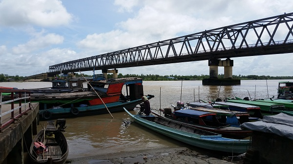
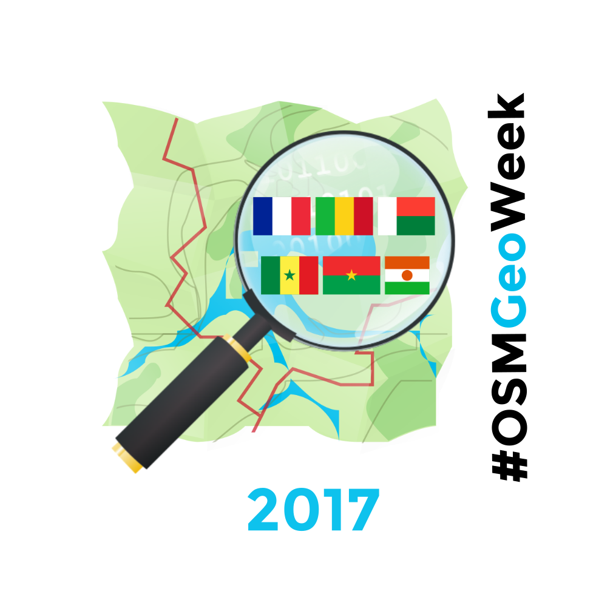
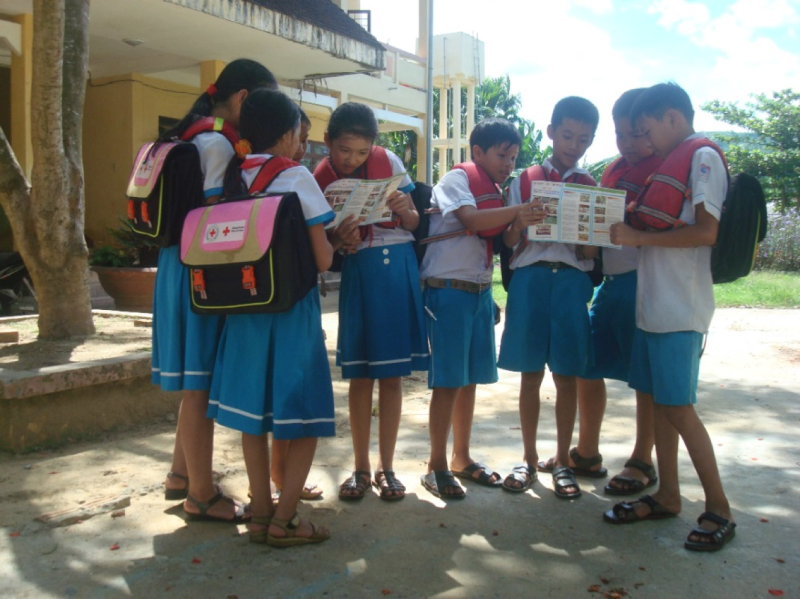
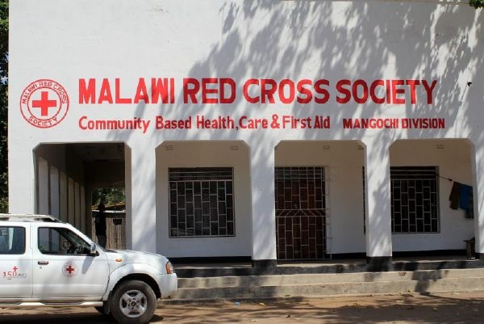
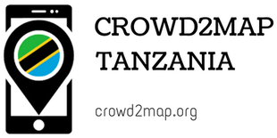

Ngapudaw, Myanmar – Missing Maps
The Red Cross is mapping the Ayeyarwady Delta area in Myanmar as part of a multi-year mapping and data readiness activity to better understand where critical infrastructure and roads are to inform decision making during potential disasters.

As recently as 2008 a cyclone killed at least 77,000 people with over 55,900 missing, and left about 2.5 million homeless. The map data will help the Red Cross to better understand where people live in relation to potential hazards so that we can help them be prepared for the disaster and so national decision makers can make better decisions in the immediate aftermath of a disaster.
CartONG Supported Projects
CartONG supports this year french speaking OSM communities for OSMGeoWeek, including in Mali, Madagascar, Niger, Burkina Faso, and Senegal.

Through “Synergies francophones 2017” and with the support of Auvergne-Rhône-Alpes region (France), CartONG supports this year french speaking OSM communities for OSMGeoWeek.
Building Canada 2020
A community-led initiative driven by a simple and clear vision: map all buildings in Canada on OpenStreetMap by the year 2020

Building Canada 2020 is a community-led initiative driven by a simple and clear vision: map all buildings in Canada on OpenStreetMap by the year 2020.
Quảng Ngãi, Vietnam – Missing Maps
Increasing the resilience and capacities of 24 disaster prone communes

The American Red Cross is partnering with the Vietnam Red Cross to increase the resilience and capacities of 24 disaster prone communes in Quang Nam and Quang Ngai provinces.
Nsabwe, Malawi – Missing Maps
Nsanje District, Southern Region, Malawi

We will be conducting a measles campaign in Malawi in 2017. This task will create a basemap of the area in order to help Red Cross teams to plan logistics and prepare for mobile data collection and field mapping in the areas.
Crowd2Map
Aiming to put rural Tanzania on the map

Map Crowd2Map related projects on the HOT Tasking Manager
PEPFAR Uganda
U.S. President's Emergency Plan for AIDS Relief (PEPFAR) requests assistance to inventory buildings and roads for HIV/AIDS prevention and treatment programs in Uganda

The U.S. President’s Emergency Plan for AIDS Relief (PEPFAR) is the U.S. Government initiative to help save the lives of those suffering from HIV/AIDS around the world. PEPFAR requests assistance to inventory buildings and roads for HIV/AIDS prevention and treatment programs. This task focuses attention on a county that borders the lake: Siaya. Understanding where communities are located and how they are connected by roads is essential to understanding whether HIV/AIDS services are in the right place. The data that emerge from this mapping task will support our understanding of program coverage, the optimization of supply chain logistics, and the analysis of clinical site-level data.
PEPFAR Tanzania
U.S. President's Emergency Plan for AIDS Relief (PEPFAR) requests assistance to inventory buildings and roads for HIV/AIDS prevention and treatment programs in Tanzania

The U.S. President’s Emergency Plan for AIDS Relief (PEPFAR) is the U.S. Government initiative to help save the lives of those suffering from HIV/AIDS around the world. PEPFAR requests assistance to inventory buildings and roads for HIV/AIDS prevention and treatment programs. This task focuses attention on Shinyanga, Tanzania. Understanding where communities are located and how they are connected by roads is essential to understanding whether HIV/AIDS services are in the right place. The data that emerge from this mapping task will support our understanding of program coverage, the optimization of supply chain logistics, and the analysis of clinical site-level data.